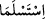

gösterir.
Denilir ki peygamberlerin rüyaları haktır; vahiy kabilindendir. Zira onlara vahiy hep
uyanık olarak gelir. Çünkü onların kalbleri asla uyumaz. Bir de onların nefis, gönül ve
ruh dünyaları temiz olduğu için şeytan onlara nüfuz ve tesir etmeye yol bulamaz.
Es’iletü’l-Hikem’de der ki: Peygamberlerin rüyaları haktır. Haksız yere adam
öldürmek büyük günahtır. Peki hal böyleyken Allah Teâlâ neden İbrahim (a.s.)’a oğlunu
kurban etmesini rüyada emretmiştir? Cevaben denilir ki: Uyanıkken değil, uykuda ve
rüyada emretmiştir. Çünkü Allah Teâlâ’nın bir mü’mini haksız yere öldürmekten daha
çok gazap ettiği bir şey yoktur.
“İnşallah beni” Allah için kurban edilmeye yahut Allah’ın hükmüne “sabredenlerden
bulursun, dedi.”
Sonra İsmail (a.s.) Allah Teâlâ’nın bu imtihanına karşı “İnşallah” diyerek O’ndan
yardım istedi. Kim meşîet ve iradeyi Allah’a isnad ederse o helak olmaz. Burada
kurbanlık İsmail (a.s.) “İnşallah beni sabredenlerden bulursun” diyerek kendisini
sabredenler zümresine dahil etti. Allah Teâlâ da ona şefkat ve merhamet etti. Benzeri
bir durumda Mûsâ (a.s.) münferit olarak kendisini ortaya koydu ve Hızır (a.s.) ile olan
buluşmasında “Mûsâ: İnşallah, dedi, sen beni sabreder bulacaksın. Senin emrine de
karşı gelmem.” (el-Kehf 18/69) dedi ve bu zümrenin dışında kaldı. Halbuki işi Allah’a
bırakmak münferit hareket etmekten daha iyidir. Meram ve maksudun tahsil edilmesine
daha uygundur. İsmail (a.s.) teslim ve işi Allah’a ısmarlama makamında olduğu için
durdu ve sabretti. Mûsâ (a.s.) ise öğrenci konumunda olduğu için öğrenci anlamadığı
hususlarda hocasına bir takım soru ve itirazlarla talepte bulunabilir. Hal böyle olunca
Mûsâ (a.s.) karşı çıktı ve sabretmedi. Bazıları der ki Mûsâ (a.s.) zâhirde itiraz etmişse
de bâtın ve iç aleminde o da teslim olmuştur. Zira Mûsâ (a.s.) Hızır (a.s.)’a kendi
mükellef ve memur olduğu şeriat gayretiyle itiraz etmiştir.
103, 104, 105, 106. Her ikisi de teslim olup, onu alnı üzerine yatırınca: Ey
İbrahim! Rüyayı gerçekleştirdin. Biz iyileri böyle mükâfatlandırırız. Bu, gerçekten,
çok açık bir imtihandır, diye seslendik.
İbrahim (a.s.) ve oğlu İsmail (a.s.) “Her ikisi de” Allah’ın emrine “teslim olup...”
“
” bunların hepsi teslim oldu anlamına gelir. Dolayısıyla bu
âyet başta “
” olmak üzere bu lügatlerin hepsiyle yani “
” ve “
” şeklinde de